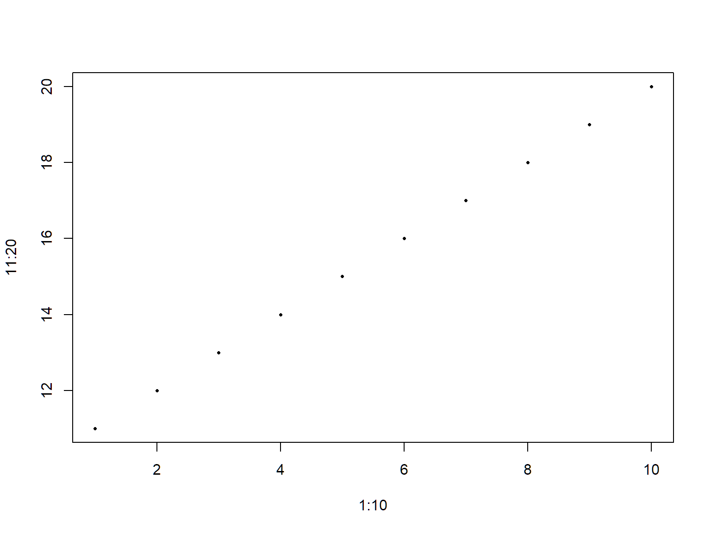
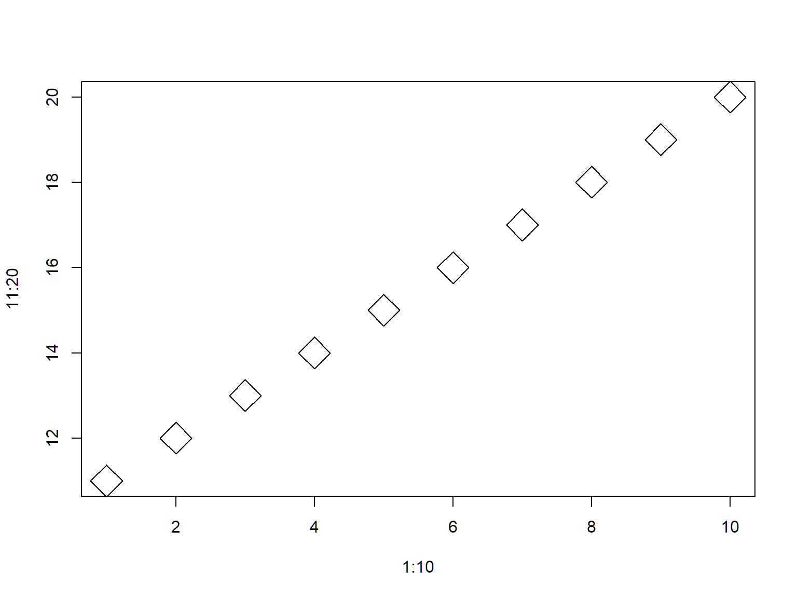
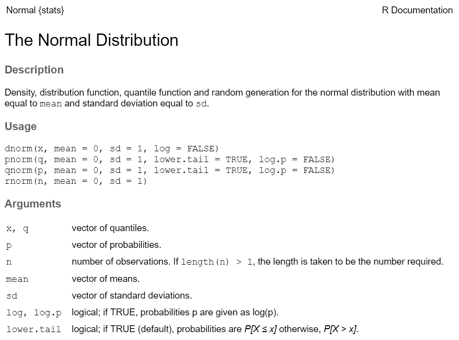

R Syntax Review
White space is generally ignored in R (but helpful for readability).
Everything in R is case sensitive.
The # character tells R that what comes afer is a comment.
A key technique in all programming languages is to store values in the form of variables.
In R, you can use the ‘=’ or ‘<-’ operators to do this.
RStudio keyboard shortcut to insert ‘<-’: alt + -
The term ‘variable’ and ‘object’ are generally synonymous.
Note when you assign a value to a variable, R doesn’t print the result to the console. To see the value of a variable, simply type it by itself.
Pretty much anything can be saved to a variable. Here we save some text and dates.
## [1] "vanilla"## [1] "2019-07-13"You can give a new value to a variable at any time.
You can use ‘current’ value as part of the expression for the ‘new’ value.
Fix this code:
[Solution]
The rules for naming variables are pretty flexible. You can use numbers, letters, and most special characters.
Rules to take note of:
There are a handful of popular naming styles. Pick one that you like, and be consistent!
| Style | Example |
|---|---|
| alllowercase | adjustcolor |
| period.separated | shoe.size |
| underscore_separated | numeric_version |
| lowerCamelCase | addTaskCallback |
| UpperCamelCase | SignatureMethod |
All variables have a class or data type, which you can view using class().
## [1] "numeric"Other common data types:
Most variables are vectors, in other words they can store multiple values. For basic data types, like numbers and characters, these are called vectors.
When we enter x <- 1, we are actually creating a numeric vector of length 1.
## [1] 24
rep() is a function that repeats a value, returning a vector:
## [1] "ball" "ball" "ball" "ball" "ball"
rnorm() is a function that can generate multiple random numbers:
## [1] 0.54775618 0.03851955 -2.07022736 -0.06889942 0.83044164
c() stands for combine. It returns a vector containing the arguments passed (which all have to be the same type).
## [1] TRUE FALSE TRUE
LETTERS is an example of a built-in constant. It contains a vector of length 26 containing characters:
## [1] "A" "B" "C" "D" "E" "F" "G" "H" "I" "J" "K" "L" "M" "N" "O" "P" "Q"
## [18] "R" "S" "T" "U" "V" "W" "X" "Y" "Z"The [1] and [18] in the output tells you the index of the element displayed after it.
## [1] 26Sequences of numbers are useful for setting up loops and data wrangling.
You can use : to create a vector of integers.
## [1] 1 2 3 4 5 6seq() is more flexible, and can take arguments to customize the sequence:
## [1] 8.0 8.5 9.0 9.5 10.0 10.5 11.0 11.5 12.0 12.5 13.0 13.5 14.0[Solution]
## [1] 1 2 3 4 5 6 7 8 9 10## [1] 2 3 4 5 6 7 8 9 10 11## [1] 1 4 9 16 25 36 49 64 81 100This illustrates that many operators and functions are vectorized. In other words, the operation takes place on each element individually.
Comparison operators:
Test for equality: == !=
Contains: %in%
Relationships: > >= < <=
You can save the results of a comparison to a variable:
## [1] FALSE TRUE FALSEwhich(x) returns the indices of the elements of x which are true
While there are many plotting packages, plotting functions in Base R include:
plot()
plot(…, add=TRUE) overlays more data on the last plot
hist()
barplot()
boxplot()
‘Base R’ refers to the functions available when you first install R (as opposed to functions in additional packages you install later.)
Plot and graph are generally used interchangably.
Generate these plots. What do the pch and cex arguments do?
[Solution]


pch controls the symbol shape (plot character), and cex controls the symbol size (character extension factor).
[Solution]
Top Five Arguments for Plotting Spatial Data
| Argument | Effect on Plot |
|---|---|
| asp = 1 | aspect ratio |
| col=“red” | fill color |
| border=“blue” | outline color |
| pch=16 | point symbol (16 = round dot) |
| axes = TRUE | draw axes |
Many functions take arguments. Arguments can be required or optional.
See the function’s help page to determine which arguments are expected.

If you pass arguments to a function in the order expected and don’t skip any, you don’t have to name them:
rnorm(500, 50, 3) ## generate 500 normally distributed random
## numbers with a mean of 50 and stand dev = 3.If you don’t pass arguments in expected order (or skip some), you have to name them in the parentheses:
rnorm(n=100, sd=0.3) ## generate 100 normally distributed random
## numbers with stand deviation = 0.3[Solution]
## [1] 5.000000 6.428571 7.857143 9.285714 10.714286 12.142857 13.571429
## [8] 15.000000When you import or save objects to disk using a command, you don’t have the luxury of an interactive file dialog. You have to know where it’s going.
All file paths are relative to the working directory. You can view or set the working directory from RStudio or with commands at the console:
You can set the working directory from the RStudio Session menu.
R uses standard Linux notion when interpreting directory names. The default ‘Home’ directory is usually your Documents folder, and can be specified with the ~ character.
## [1] "C:/Users/Andy/Documents"The ‘root’ directory on the current volume (drive) can be specified with the ‘/’ character. You can specify the drive letter if you’d like also (e.g., c:/).
## [1] "C:/"Important Note for Windows users
R requires forward slashes (/), not back slashes (\). If you really want to keep using back slashes, you can use a double back slash (\\)
Current working directory: ‘.’.
## [1] "C:/Workshops/R-Spatial/rspatial_mod/rmd_slides"Go up one directory level: ‘..’
## [1] "C:/Users/Andy"You can specify the current directory with a period (.). If you want to save something to a sub-directory of the active directory, start with the period and then keep going.
Try these functions:
Use file.exists() in your code to make sure you typed in file names correctly.
Use file.choose() to get a file name with a standard file selection window.
In RStudio, use the Files tab to browse your files, open R files, and set the working directory.
You can save individual variables to disk with the save() function. save() saves objects in a binary, compressed file format that R understands. This makes it very flexible and easy to bring back into R using the sister function load().
If you don’t specify a directory as part of the file name, it will go in the working directory.
x_nums <- rnorm(1000) * 20
## Save to to My Documents
save(x_nums, file="~/my_random_numbers.RData").RData and .Rda are common extensions for R data files, but you can name your file anyting you want.
R introduced a new compression standard in version 3.5. To be backwards compatible with earlier versions of R, add version=2 to save().
To save your entire workspace (all variables in memory), use the save.image() function. RStudio also has a ‘Save Workspace’ button on the ‘Environment’ window, and will probably ask if you want to save your workspace when you quit the program.
To load a file back into memory, use the load() function.
You can save and open scripts, R Markdown files, etc. from the RStudio File menu.
If you have a set of commands that you want to rerun repeatedly, you can save them as a *.R file and then run them all at once with source() function.
source() automatically runs all the commands in a script, so only use it with scripts that are ‘ready-to-go’. To run commands one-by-one, open it in RStudio.
Still to come…